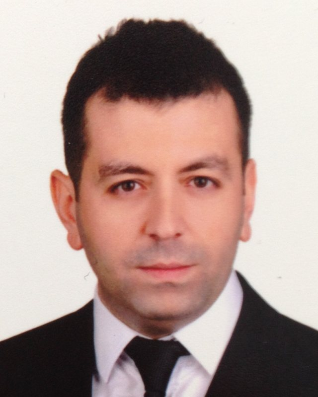

Supply chain
Warehouse AI Suite
Tracks SKUs, suppliers, stock and purchase orders in one place, and flags low inventory before it becomes a stockout.
FastAPI, PostgreSQL, Alembic, Docker
View on GitHubCenk Akın
I spent eight years leading operations teams of up to 150 people. Now I build the software that helps them do more with less.
For eight years, I led customer operations at Turkcell and KKTCELL.
In Northern Cyprus, I built a national operator's customer operation from zero.
Later I saw how much of the daily work was repetitive. So I learned to automate it.
Today I bring both: an operator's judgment and an engineer's toolkit.

I'm an operations leader who writes production software. I spent eight years managing customer operations for Turkcell, Türkiye's largest mobile operator, and for KKTCELL in Northern Cyprus. My teams numbered 100 to 150 people.
At KKTCELL, there was no customer operation when I arrived. I designed the customer-service and CRM operation end to end: the call centre, the back office, the IVR, every process and every KPI the business ran on.
Since 2012, I've worked independently and retrained as a software engineer. I now build the kind of systems I once wished my teams had. They forecast demand, plan staffing, track inventory and flag problems before a person has to go looking for them.
I live in Vancouver, BC. I'm looking for a role where leading people and building systems are part of the same job.
From running the floor to building the software behind it.
2012 – present
Self-employed
After leaving corporate operations, I worked independently and moved into software engineering. Today I build and run production systems end to end, from database design to deployment. My services run unattended around the clock and escalate only what needs a human decision.
Python, FastAPI, PostgreSQL, Docker, GitHub Actions, LLM APIs
2011 – 2012
Turkcell Global Bilgi, Türkiye
I returned to Turkcell's customer-operations company to lead large teams again, bringing back what I had learned from building an operation from scratch.
2010 – 2011
KKTCELL, Northern Cyprus
I built the national mobile operator's customer-service and CRM operation from the ground up.
2004 – 2010
Turkcell Global Bilgi, Türkiye
I managed customer-operations teams of 100 to 150 people at the customer-experience arm of Türkiye's largest mobile operator.
Systems that solve real operational problems, built to the standard I'd expect in production.
Supply chain
Tracks SKUs, suppliers, stock and purchase orders in one place, and flags low inventory before it becomes a stockout.
FastAPI, PostgreSQL, Alembic, Docker
View on GitHubWorkforce planning
Forecasts demand for every store and product, then turns it into a staffing plan that meets service-level targets.
FastAPI, PostgreSQL, forecasting
View on GitHubLogistics
Inventory and order management with role-based permissions, so every user sees exactly what their job requires.
FastAPI, SQLAlchemy, JWT
View on GitHubData extraction
Turns paper receipts into structured data and reports spend by vendor, category and period.
Tesseract OCR, FastAPI, PostgreSQL
View on GitHubDocument AI
Ask a question in plain English and get the answer straight from a stack of PDFs.
Vector search, OpenAI, FastAPI
View on GitHubReal-time analytics
Monitors market trades in real time and surfaces unusual activity on a live dashboard.
WebSockets, Redis, Plotly Dash
View on GitHubAI system
A local-first AI assistant running 24/7 on my own hardware, with source-linked memory, one-command agents and strict spending limits.
Python, LLM agents, encryption
Private, demo on request
Automation
A suite of scheduled services that watch public data sources, apply business rules and alert by email, Telegram or voice when something changes.
GitHub Actions, Python
Private, demo on request
What I bring to a team from the first week.
If you're hiring for operations leadership or a technical role close to the business, I'd like to hear from you. I'm based in Vancouver and ready for my next role.
akincenk@gmail.com